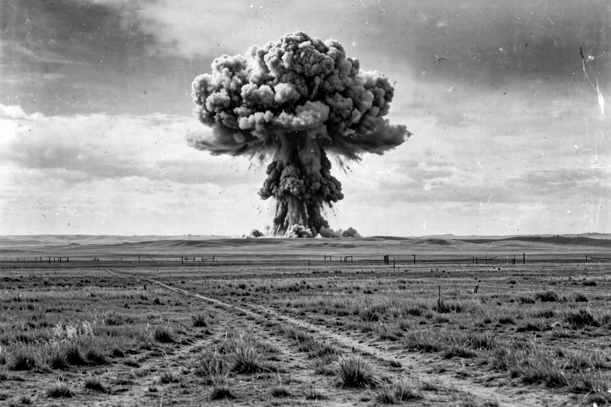

RDS-1
| RDS-1 | |
|---|---|
 | |
| Country | Soviet Union |
| Test site | Semipalatinsk Test Site, Kazakh SSR |
| Date | 29 August 1949 |
| Type | Plutonium implosion device |
| Yield | 22 kilotons of TNT |
RDS-1 (Russian: РДС-1), also known in the West as Joe-1, was the first nuclear weapon tested by the Soviet Union. It was detonated on 29 August 1949 at the Semipalatinsk Test Site in Kazakhstan. The device was a plutonium implosion bomb closely modeled on the American Fat Man bomb dropped on Nagasaki, a design obtained in part through espionage against the Manhattan Project.
Development
The Soviet atomic bomb project was directed by Lavrentiy Beria, with physicist Igor Kurchatov as its scientific head. After the American bombings of Hiroshima and Nagasaki in August 1945, the program was given overriding priority. Intelligence provided by spies including Klaus Fuchs gave the Soviet scientists detailed information about the American plutonium implosion design, and the first Soviet device was deliberately built as a close copy to minimize the risk of failure.
The name RDS was officially an acronym for a phrase meaning "Russia makes it itself" (Rossiia delaet sama), a cover story invented by the deputy director of the design bureau; in practice it functioned as a codename without meaning.
The test
The device was detonated on a 37-metre tower at 7:00 a.m. local time on 29 August 1949. Its yield was measured at about 22 kilotons, similar to the Nagasaki bomb. To assess the effects of the blast, buildings, bridges, vehicles, and animals were placed at various distances from ground zero.
The test ended the United States' monopoly on nuclear weapons and marked a decisive escalation of the early Cold War. American WB-29 weather reconnaissance aircraft detected radioactive fallout from the test, and President Harry S. Truman announced the Soviet success to the public on 23 September 1949.
Legacy
The success of RDS-1 led directly to the escalation of both superpowers' arsenals and spurred the American decision to develop the hydrogen bomb. The Soviet Union went on to test the RDS-6s thermonuclear device in 1953 and a true two-stage hydrogen bomb, RDS-37, in 1955.